此处copy我当初写的用户手册部分内容：
基恩士视觉检测简单手册
运行画面如下：
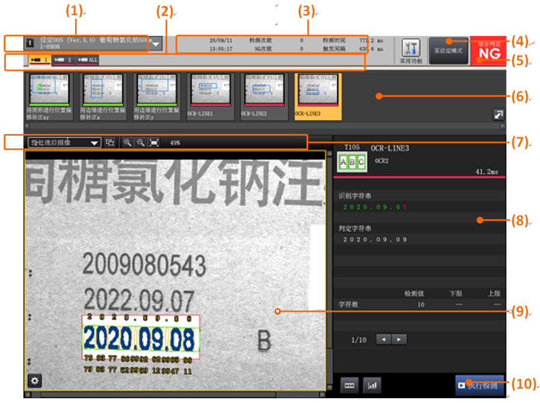
(1)设定No. / 名称显示 显示正在运行的设定No.与名称。
(2)画面选项卡 切换画面显示的选项卡。单击选项卡可切换运行画面显示。
(3)信息显示区 显示日期、检测次数、综合判定NG次数、检测时间和触发间隔。
(4)模式切换键（运行模式/设定模式） 单击此键可以互相切换运行模式与设定模式。
…运行状态 …设定状态
(5)综合判定显示
…综合判定OK时 …综合判定NG时
(6)工具栏（工具一览） 显示已设定工具的缩略图。单击缩略图时，图像画面将显示该工具的检测范围与检测结果。CCD选项卡时仅显示该CCD的工具、ALL选项卡时将显示所有的工具。
(7)查看栏 进行图像画面的扩大/缩小、显示类别的更改。
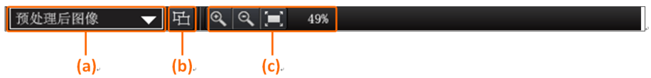
(a)切换显示类别
(b)复数范围显示图标
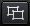…复数范围显示OFF状态 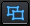…复数范围显示ON状态
(c)画面倍率图标
…扩大 …缩小 …贴合 …当前倍率
(8)检测值显示 显示所选工具的检测值。
(9)图像画面 显示CCD输入图像。
(10)执行检测(触发输入)键 单击按钮执行检测。
===============================================================================
设定画面如下：
与运行模式时相同的说明已被省略。
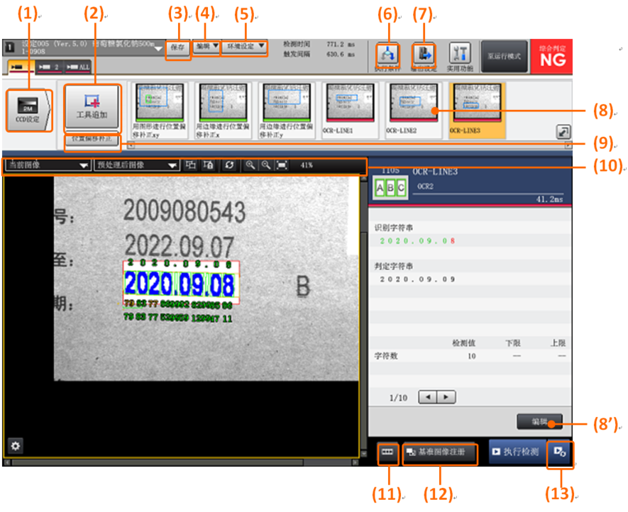
(1)CCD设定键 单击此键将显示CCD设定画面。
(2)工具追加键 单击此键将显示工具追加画面。
(3)保存键 单击此键将保存当前的检测设定。
(4)编辑键 单击此键将显示检测设定的编辑菜单。
(5)环境设定键 单击此键将显示环境设定的编辑菜单。
(6)执行条件键 单击此键将显示执行条件的设定画面。
(7)输出设定键 单击此键将显示输出设定画面。
(8)工具栏（工具一览） 显示已设定工具的缩略图。
缩略图在选择状态时按(8')的「编辑」键，该工具将进入编辑状态。亦可双击缩略图进入编辑状态。
(9)位置偏移补正键 单击此键将显示位置偏移补正设定画面。
(10)查看栏 更改图像画面的显示比例与显示类别。
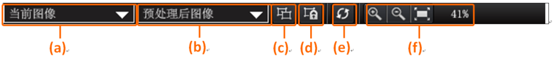
(a)切换显示图像 (b)切换显示类别 (c)复数范围显示图标
…复数范围显示OFF状态 …复数范围显示ON状态
(d)范围锁定图标
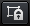…范围锁定OFF状态
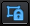…范围锁定ON状态
(e)连续更新图标
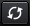…连续更新OFF状态
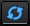…连续更新ON状态
(f)画面倍率图标
…扩大 …缩小 …贴合 …当前倍率
(11)图像栏键 单击此键可切换图像栏的显示与非显示。
(12)基准图像注册键 单击此键将显示基准图像注册画面。
(13)连续执行键 单击此键将进行连续检测。
1. 更改“判定字符串”的调整方法
1.1 如果当前处于“运行状态”，点击“ ”进入“设定状态”。
1.2 点击“ ”选择CCD1的工具栏中的OCR第一行“ 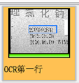 ”,然后点击“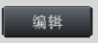 ”进入编辑状态。
1.3 在“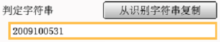 ”输入当前批次号，然后点击“ ”即可完成设定。
1.4 依照1.1 ~ 1.3 依次设定CCD1的“OCR第二行”、“ OCR第三行”，以及CCD2的“OCR第一行”、“ OCR第二行”、“ OCR第三行”。最后点击“ ”进入“运行状态”就可以正常进行检测剔除了。
2. 更改“产品种类”的调整方法
2.1 如果更改产品，并且新的产品箱子与原箱子差别较大，导致摄像头无法完整拍摄所有字符，此时需要先调整摄像头向后使得视野包含批号可能出现的所有区域。建议视野的左边界是“冒号”，右边界是“追溯码”的一半，上边界是产品名称的下边缘，下边界是“规格：xxml”的上边缘。参考如下图的红色框：
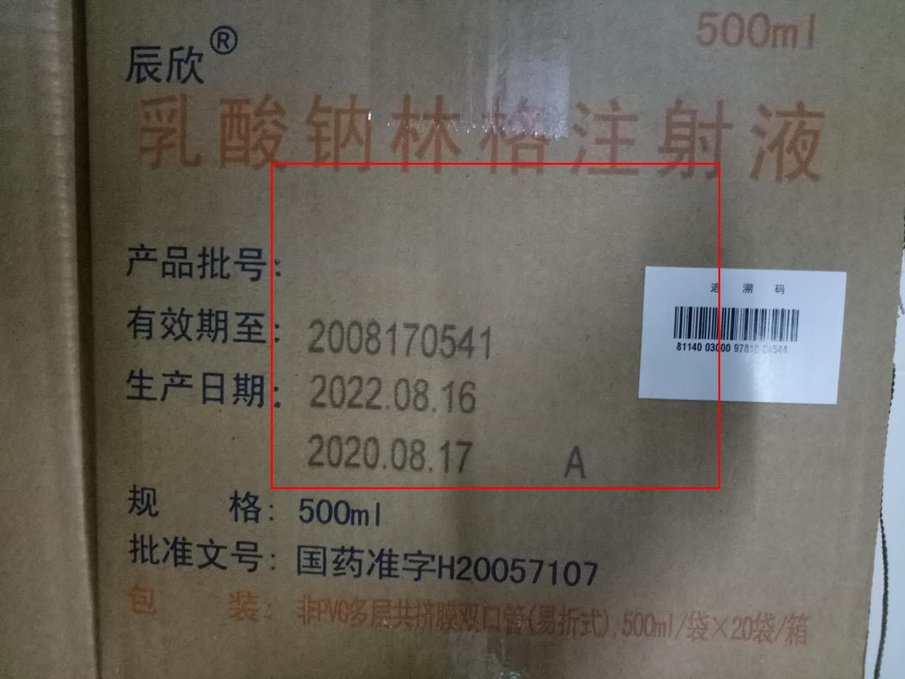
2.2 摄像头调整完成后，点击左上角“设定xxx”出现如下界面：
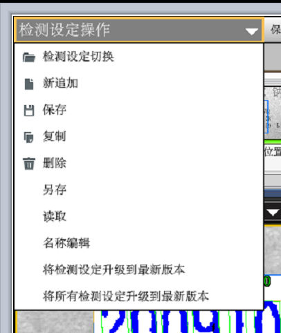
选择“复制” 后出现如下界面：
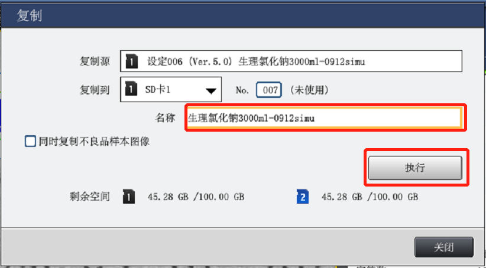 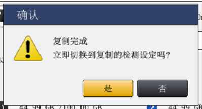
修改图中的“名称”，然后点击“执行”后等待复制完成后，选择“是”。
2.3 点击“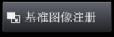 ”先注册基准图像。显示如下画面：
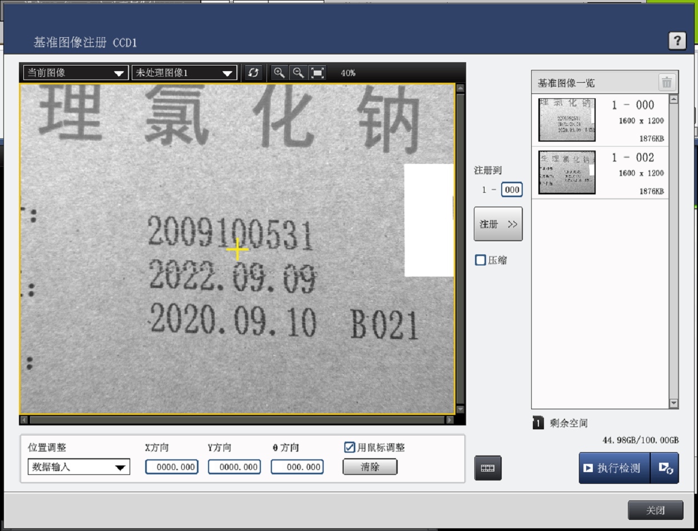
选择“当前图像”和“未处理图像1”，然后正常通过一箱产品后，如果捕获的图像符合预期，则点击“注册”按钮注册到“1-000”。然后点击“关闭”。
2.4 点击“用图形进行位置偏移补正xy” -> “编辑”。如下图所示：
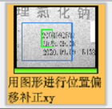 ->
2.5 点击“搜索范围”选择类似如下图的边界，具体就是“2009/2022”字符会出现的范围。然后点击“搜索对象”框选“200/202”几个字符。最后点击“确定”按钮完成该工具设定。
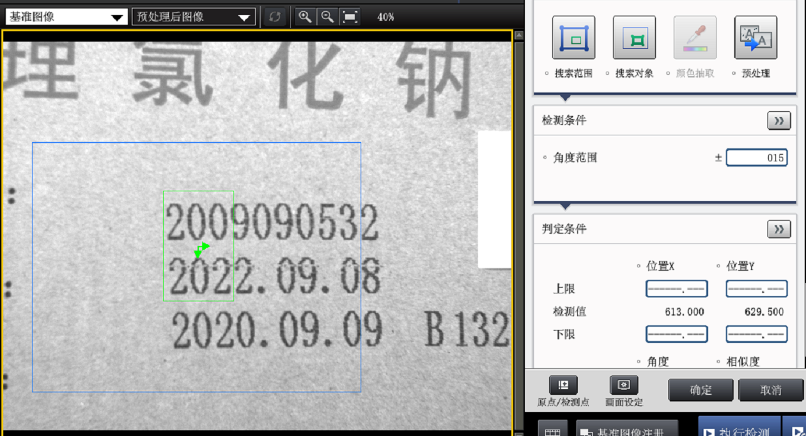
2.6 点击“用边缘进行位置偏移补正x” -> “编辑”。如下图所示：
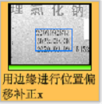 ->
2.7 点击“检测范围”选择类似如下图所示边界，注意上边界紧贴第一行字符，下边界紧贴第三行字符，左边界离“20xx”字符大约1/2个字符距离。最后点击“确定”完成该工具设定。
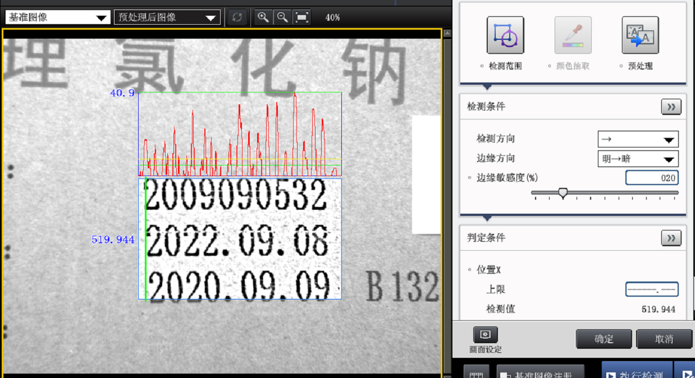
2.8 点击“用边缘进行位置偏移补正y” -> “编辑”。如下图所示：
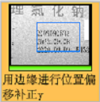 ->
2.9 点击“检测范围”选择类似如下图所示边界，注意上边界距离第一行字符上边界大约1/2字符高度，下边界紧贴第三行字符，左边界紧贴“20xx”字符。最后点击“确定”完成该工具设定。
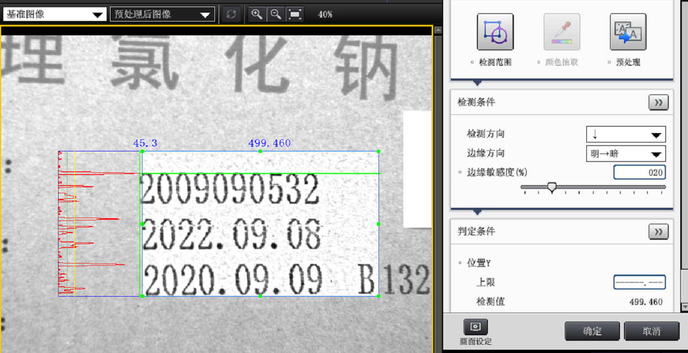
2.10 按照2.1 ~ 2.9更改 CCD2的相关设定。
2.11 按照1.1 ~1.4 更改判定字符串，最后点击左上角的“保存”当前设置，然后即可开始运行新设定。
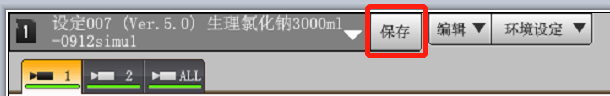
3. 修改批号导致位置不准 “用图形进行位置偏移补正xy”
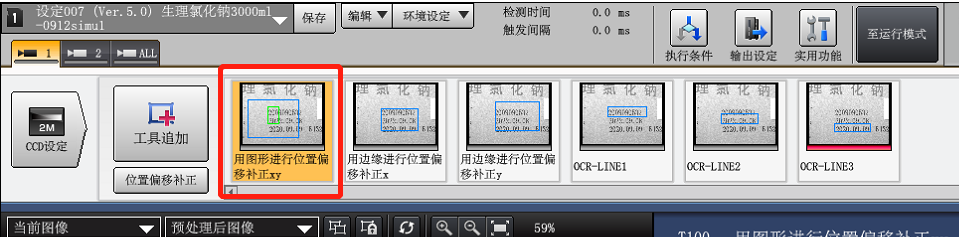
(1) 选择“搜索对象”， (2) 框选“2022/2020”，(3)点击“确定”。 对第2个摄像头也是如此修就可以了。
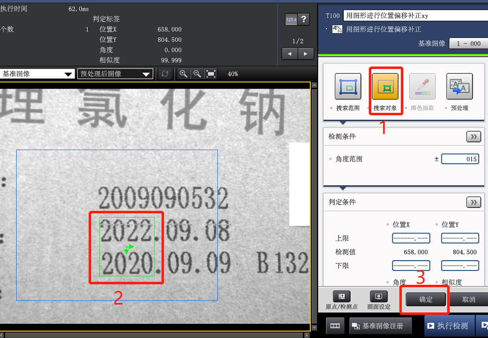 .
4. Incoming